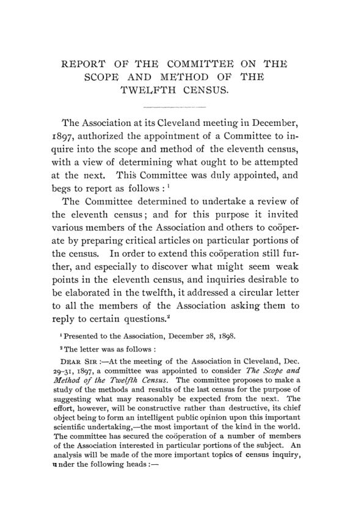

O censo sob exame: o que os números de 1890 não sabiam contar
Leitura: 7 min
Às vésperas do censo de 1900, economistas americanos auditaram o de 1890: mortes contadas de porta em porta, presos tomados por crimes, médias de salário sem sentido e um escritório desmontado a cada década.


O censo de 1890 registrou para Long Island uma área de 1.007 milhas quadradas. Medida por um especialista nos mapas do Coast Survey, a área verdadeira ficava a 1% de 1.353,8. Walter F. Willcox abre com esse erro o volume que a American Economic Association dedicou ao censo federal, publicado em março de 1899. Se nem a superfície de uma ilha estava certa, a pergunta seguinte era inevitável: o que valiam as contas de mortes, crimes, salários e riqueza?
O livro nasceu de uma comissão criada na reunião de Cleveland, em dezembro de 1897, para estudar o método do décimo primeiro censo e propor o que se devia tentar no décimo segundo, o de 1900. Formavam a comissão Richmond Mayo-Smith, Willcox, Carroll D. Wright, Roland P. Falkner e Davis R. Dewey. A carta circular aos sócios fracassou, com cerca de sessenta respostas. Os convites para ensaios assinados deram resultado: são duas dezenas de textos, de autores independentes, sobre quase todos os capítulos do censo.
Qual era o defeito, segundo a comissão?
O diagnóstico do relatório é preciso: a crítica recai menos sobre a exatidão das respostas do que sobre o tratamento dos dados e a falta de continuidade de um censo para outro. A causa seria o pouco tempo dado por lei para preparar planos e questionários. O remédio, um escritório permanente sob as regras do serviço civil. A comissão também queria um censo menor e propunha transferir pesca, minas, irrigação, escolas, transporte e hipotecas a repartições que já publicavam estatísticas parecidas. William C. Hunt resumiu o problema numa frase:
“Cada censo é uma lei em si mesmo” (“Each census is a law unto itself”)
Pode-se contar num dia o que acontece ao longo de um ano?
É o fio que une os ensaios de estatística vital e social. Irving Fisher, de Yale, explica que a mortalidade é um fluxo ao longo do ano, enquanto o censo fotografa a população num único dia: as mortes só se contam direito quando são registradas no momento em que ocorrem. O censo de 1850 mostrava uma morte para cada 51 vivos em Massachusetts e uma para cada 100 em Vermont, contraste que ele trata como prova de contagem falha. Fisher tirou daí uma regra:
“Estatísticas inexatas, se não forem rotuladas, são muito piores que nenhuma” (“Inaccurate statistics, unless so labeled, are far worse than none at all.”)
Cressy L. Wilbur, do serviço de estatística vital de Michigan, mostra o mesmo defeito por outro lado. Fora da área de registro civil, a taxa de mortalidade apurada pelos recenseadores caiu de 13,42 por mil em 1880 para 10,79 em 1890, e o próprio censo atribuiu a queda a respostas mais incompletas, e não a uma melhora sanitária. Falkner aplica o argumento ao crime: o número de presos num dia depende das penas e não mede a criminalidade. Samuel M. Lindsay o aplica ao pauperismo: a lotação dos asilos num dia diz pouco sobre quem foi socorrido no ano.
Por que os números da indústria enganavam?
S. N. D. North chama as estatísticas de manufaturas de as mais fracas do censo, embora estivessem entre as mais cuidadosamente compiladas. Eram usadas pelos dois lados do debate entre capital e trabalho, e cada lado achava nelas prova de qualquer tese. A medida era o valor, e o valor bruto contava o mesmo produto várias vezes: o fio entra no tecido, que entra na roupa. North resumiu assim:
“Nossas estatísticas de manufaturas são reservatórios de erro popular.” (“Thus our manufacturing statistics are reservoirs of popular error.”)
O problema não se limita à indústria. Carl C. Plehn mostra que no inventário da riqueza nacional só itens que somam pouco mais de 10% do total tiveram método satisfatório. Também mostra que avaliações fiscais podem dobrar num ano sem que a riqueza mude. Mayo-Smith mostra que a lista de ocupações mudou de critério a cada censo, de 323 designações em 1850 para 218 em 1890. Dewey encontra 14,4 milhões de matrículas informadas pelas escolas contra 11,7 milhões de alunos declarados no questionário geral.
O que o volume pedia para 1900?
As propostas convergem: registro contínuo em vez de enumeração para mortes, crimes e auxílio aos pobres; classificações estáveis; menos médias e mais distribuições; indicação do erro provável ao lado de cada número; e um censo concentrado em população, agricultura e manufaturas. Há também agendas novas, como o inquérito de Franz Boas sobre a política indígena, o de N. I. Stone sobre o tamanho e a forma de posse das fazendas e o de David Kinley sobre o penhor de safra. O apêndice registra que a lei de 1899 já limitou as estatísticas de nascimentos e mortes às áreas com registro civil.
Na minha leitura
Na minha leitura, o volume é um manual de método disfarçado de crítica. A distinção que Fisher, Falkner e Lindsay repetem, entre o retrato de um dia e o fluxo de um ano, é a mesma que separa estoque de fluxo em qualquer conta econômica. A objeção de North ao valor bruto antecipa a lógica do valor adicionado, sem a qual não existe contabilidade nacional. Quase nada ali envelheceu, porque os erros apontados não eram de aritmética, e sim de definição.
O outro ponto é institucional. A comissão não culpa os funcionários; culpa um sistema que montava o escritório a cada dez anos e o desmontava em seguida, com nomeações políticas no meio. Estatística confiável depende de continuidade, de pessoal estável e de quem diga ao usuário quanto cada número vale. Um país pode ter dados abundantes e, ainda assim, não saber em quais acreditar.
Glossário
- enumeração
- coleta feita pelo recenseador de casa em casa, referida a um único dia.
- registro civil
- anotação contínua de nascimentos e mortes no momento em que ocorrem, por certidões e licenças de sepultamento.
- área de registro
- estados e cidades cujos registros de óbito eram bons o bastante para calcular taxas confiáveis.
- estoque e fluxo
- o estoque é medido num instante (presos hoje); o fluxo, ao longo de um período (condenados no ano).
- taxa de mortalidade corrigida
- taxa ajustada para que diferenças na composição por idade e sexo não distorçam comparações entre regiões.
- tábua de vida
- tabela que mostra, para cada idade, a probabilidade de sobreviver até a seguinte; base do cálculo da vida média.
- dupla contagem
- soma do valor bruto de produtos que servem de insumo a outros, contando o mesmo bem várias vezes.
- avaliação ad valorem
- valor atribuído à propriedade para cobrar imposto proporcional, distinto do valor de mercado.
- penhor de safra (crop lien)
- garantia sobre a colheita futura dada ao comerciante que adianta insumos e mantimentos.
- sistema de espólio (spoils system)
- prática de preencher cargos públicos com aliados do partido no poder.
- tabulação Hollerith
- sistema de cartões perfurados lidos por máquinas elétricas, usado no censo de 1890.
Artigos desta edição
- Report of the Committee on the Scope and Method of the Twelfth Census — Comissão da American Economic Association: Richmond Mayo-Smith, Walter F. Willcox, Carroll D. Wright, Roland P. Falkner e Davis R. Dewey (pp. 1–7). Relatório da comissão criada na reunião de Cleveland, em dezembro de 1897, e apresentado em 28 de dezembro de 1898. A carta circular aos sócios rendeu só cerca de sessenta respostas; os convites para ensaios assinados tiveram acolhida muito melhor. A comissão não endossa as conclusões de cada autor, mas resume o diagnóstico comum: o problema é menos a exatidão das respostas do que o tratamento dos dados e a falta de continuidade entre censos. Pede um escritório permanente sob as regras do serviço civil e a transferência de inquéritos secundários, como pesca, minas, escolas e hipotecas, a repartições especializadas. JSTOR
- Area, Population, Birthplace, Migration and Conjugal Condition — Walter F. Willcox (pp. 8–37). Willcox começa pelo que parece indiscutível, a área. O censo de 1890 deu a Long Island 1.007 milhas quadradas; a área verdadeira fica a 1% de 1.353,8. Define população como presença física no dia do censo ou residência e estima, pelas contagens estaduais que cobriram 27% do país, que a enumeração federal ficou provavelmente a 1% da verdade. Contesta a tese oficial de que o imigrante tem “apetite” pela cidade: o estrangeiro entra pelos portos e depois se dispersa. Mostra que os migrantes internos superam os estrangeiros e desconfia das respostas sobre divórcio, que dependem da veracidade de quem responde. JSTOR
- Colored Population of African Descent — W. Z. Ripley (Massachusetts Institute of Technology) (pp. 38–48). Ripley trata da contagem da população negra. O censo de 1890 confirmou que a enumeração de 1870 fora incompleta, com falta estimada por Walker em pelo menos 300 mil pessoas, o que inflou o crescimento aparente da década seguinte. Em 1890 o aumento foi de 13,5%, cerca de metade do registrado entre os brancos. Para a migração, basta manter as perguntas de nascimento e residência de 1890. A comissão registra sua crítica a perguntas que o recenseador não consegue responder. A proposta central é um inquérito especial sobre a população rural do Sul, que combine dados econômicos, médicos e de natalidade, não só de mortalidade. JSTOR
- The Census of the North American Indians — Franz Boas (Columbia University) (pp. 49–53). Boas sustenta que os dados sobre os povos indígenas devem ser colhidos pelos funcionários do serviço indígena, que convivem com as tribos e lidam com a barreira das línguas e dos intérpretes. A informação etnográfica caberia ao Bureau of American Ethnology; o censo deveria limitar-se à demografia. Propõe medir três efeitos da política oficial: o loteamento individual da terra, os internatos e escolas diurnas, e a ascendência mista. Nota que a opinião corrente sobre esse último ponto não tinha base estatística. Por isso sugere medições repetidas de crianças nas escolas, com intervalo mínimo de um ano, e registros de fecundidade nas agências. JSTOR
- Age, Sex, Dwellings and Families, and Urban Population — George K. Holmes (U. S. Department of Agriculture) (pp. 54–67). Holmes parte das restrições práticas: um plano de população, agricultura e manufaturas precisa ser tabulado em cerca de cinco anos, com boa parte dos resultados em dois ou três. Defende cortar perguntas e evitar tabelas inúteis, como as que registram duas mortes por escarlatina num distrito. Culpa o sistema de nomeações políticas, que teria atrasado a conclusão do censo em pelo menos um ano após a troca de governo de 4 de março de 1893. Pede um escritório independente, subordinado ao presidente. Discute as definições de domicílio e família e propõe tabular a relação com o chefe da família e o transporte suburbano. JSTOR
- Illiteracy and Educational Statistics — Davis R. Dewey (Massachusetts Institute of Technology) (pp. 68–77). Dewey reconstrói a pergunta sobre analfabetismo desde 1840. Em 1870 o censo passou a separar quem não sabe ler de quem não sabe escrever, porque muitos diziam ler para não admitir a ignorância; a conta de quem não escreve virou a medida de fato. Critica tabulações mal escolhidas, como a da língua de quem não fala inglês. O ponto mais duro é a incoerência entre fontes: as matrículas informadas pelas escolas somam 14.373.670, contra 11.674.878 pessoas que declararam frequentar a escola no questionário geral. Conclui que as estatísticas escolares deveriam ficar com o Bureau of Education, que já as publica todo ano. JSTOR
- Statistics of Occupations — Richmond Mayo-Smith (Columbia University) (pp. 78–107). Para Mayo-Smith, a população vista pela economia é força de trabalho, e a classificação por ocupação deve servir a esse fim. Mostra como cada censo mudou o critério: 323 designações em 1850, 584 em 1860, 338 em 1870, 265 em 1880 e 218 em 1890. Em 1890 abandonou-se a classificação por grandes indústrias, e as comparações se perderam. Pede que os “trabalhadores” genéricos, hoje em serviços pessoais, sejam alocados à agricultura, ao transporte ou às manufaturas. Também quer o ramo de atuação dos escriturários. Recomenda abandonar a pergunta sobre meses de desemprego e tabular os dependentes de cada assalariado. JSTOR
- The Mortality Statistics of the Eleventh Census — Cressy L. Wilbur (Division of Vital Statistics, Lansing, Michigan) (pp. 108–120). Wilbur mostra que os volumes de estatísticas vitais crescem em tamanho e atraso a cada censo: o mais usado pelos serviços sanitários de 1890 só foi distribuído em 1898. O defeito de fundo é colher mortes por enumeração, e não por registro civil. Fora da área de registro, a taxa obtida pelos recenseadores caiu de 13,42 por mil em 1880 para 10,79 em 1890. O próprio censo atribuiu a queda a respostas mais incompletas, e não a melhora sanitária. Pede escritório permanente, cooperação com os registros estaduais, publicação rápida e taxas calculadas sobre a população, em vez de proporções de mortes. JSTOR
- Mortality Statistics of the United States Census — Irving Fisher (Yale University) (pp. 121–169). Fisher dá o argumento mais claro do volume: a mortalidade é um fluxo ao longo do ano, e o censo fotografa a população num único dia. O censo de 1850 mostrava uma morte para cada 51 vivos em Massachusetts e uma para cada 100 em Vermont, contraste que ele trata como prova de contagem falha. O ensaio discute limites de precisão, taxas de mortalidade corrigidas pela composição por idade, vida média e tábuas de vida. A primeira recomendação é abolir a enumeração de mortes. As demais: indicar o erro provável de cada número, cortar dígitos sem significado e calcular taxas sobre a população no meio do ano. JSTOR
- Statistics of Crime in the United States Census — Roland P. Falkner (University of Pennsylvania) (pp. 170–183). Falkner separa duas coisas que o censo confundia: estatística de presos e estatística de crime. O número de detentos num dia depende de quantos entram por ano e da duração das penas, e por isso não mede a quantidade de crime. A medida certa é uma taxa anual, comparável às de nascimento e morte. Como a multiplicidade de tribunais impede contar os casos julgados, ele propõe contar as admissões nas prisões por condenação ao longo do ano, com um modelo uniforme de registro prisional. Seriam números anuais para penas de um ano ou mais e decenais para as menores, mesmo à custa das séries históricas. JSTOR
- Pauperism and Benevolence — Samuel M. Lindsay (University of Pennsylvania) (pp. 184–203). Lindsay reconstrói como o censo tratou a dependência desde 1830 e mostra o mesmo defeito do caso do crime: contar asilados num dia diz pouco sobre o pauperismo de um ano. Cita o teste de Walker em Nova York: os livros das instituições registraram 59.136 admissões no ano, muito acima da lotação num dia, sem contar o auxílio domiciliar a 101.796 pessoas. O auxílio fora dos asilos, que o censo dizia não conseguir medir, ficava de fora. A lista de instituições beneficentes era incompleta e misturava lares mútuos pagos. Propõe contagens mensais de internos e um levantamento do auxílio domiciliar nos registros locais. JSTOR
- Agriculture — N. I. Stone (Columbia University) (pp. 204–218). Stone parte de um fato do texto: a agricultura ainda empregava mais gente que qualquer outra atividade e respondia pela maior parte das exportações. A pergunta econômica era se a pequena propriedade resistia à grande depois da mecanização, e o censo não permitia respondê-la. A classificação por posse inflava o número de estabelecimentos: quem possuía 100 acres e arrendava mais 50 aparecia como dois estabelecimentos. Ele propõe classificar por tamanho e forma de posse (própria, mista, arrendamento em dinheiro ou em parceria) e cruzar com área cultivada, máquinas, adubos, salários e, quando houver, dívida hipotecária. JSTOR
- Farm and Home Proprietorship and Real Estate Mortgage Indebtedness — David Kinley (University of Illinois) (pp. 219–245). Kinley avalia o inquérito mais difícil do censo de 1890, sobre propriedade de fazendas e casas e dívida hipotecária, inédito nessa escala e iniciado na última hora. O modelo foi o relatório de 1888 de J. S. Lord sobre hipotecas em Illinois. Elogia o volume de hipotecas como trabalho estatístico raro e critica o excesso de agrupamentos e um resumo de quatro páginas. A falha principal é omitir o penhor de safra, que no Sul faz o papel da hipoteca e deixa a região com dívida aparente baixa. Pede repetir o inquérito, com agentes especiais de formação jurídica, porque uma investigação isolada vale pouco. JSTOR
- The Statistics of Transportation — Emory R. Johnson e Walter E. Weyl (University of Pennsylvania) (pp. 246–256). Os autores defendem dois tipos de relatório: anual, para acompanhar setores regulados ou subsidiados, e decenal, mais detalhado e comparativo. Ferrovias eram fáceis, porque já reportavam à Interstate Commerce Commission. Já o transporte fluvial e de cabotagem não tinha estatística anual, e não teria até o Congresso obrigar os transportadores a manter registros. Nas companhias de expresso, uma empresa estrangeira se recusou a responder. Na capitalização ferroviária, sugerem mostrar lado a lado o valor de mercado e o valor nominal das ações, e separar o aumento real do capital do aumento nominal, fruto de conversões e fusões. JSTOR
- Manufactures in the Federal Census — S. N. D. North (pp. 257–302). North chama as estatísticas de manufaturas de as mais fracas do censo e as mais sujeitas a leituras erradas. São usadas por todos os lados do debate entre capital e trabalho. O padrão de medida é o valor, que mudou com a moeda: 1860 em ouro, 1870 em papel-moeda. O valor bruto conta o mesmo produto várias vezes: o fio da fiação entra no tecido, que entra na roupa. As médias de produto por empregado, de US$ 2.204 no valor bruto e US$ 999 no “líquido”, não deveriam ter sido publicadas. Conclui que nenhum par de censos foi comparável e que só um escritório permanente acumula experiência. JSTOR
- The Report of the Eleventh Census on Manufactures — William M. Steuart (pp. 303–327). Steuart descreve por dentro o relatório de manufaturas de 1890: três partes, mais de 2.000 páginas de tabelas e ainda assim só metade do detalhe planejado. Houve 27 questionários especiais e um geral, e uma parte inteira para as 165 cidades com 20 mil habitantes ou mais. Registra o consenso de limitar o censo de 1900 a população, agricultura e manufaturas. Na polêmica sobre o capital, defende perguntá-lo diretamente ao industrial em vez de estimá-lo. O censo mostrara 82 centavos de capital por dólar de produto, e uma estimativa teórica seria menos aceita que a soma das respostas. JSTOR
- Statistics of Manufactures in Cities — Worthington C. Ford (Boston Public Library) (pp. 328–342). Ford reconstitui as tentativas de medir a indústria americana, dos inquéritos do período colonial ao relatório de Hamilton e às tabelas de Tench Coxe sobre 1810. Depois examina o volume de 1890 dedicado às manufaturas das cidades. Seu veredito é negativo: diz que só consultou o volume para resolver rivalidades locais sobre a posição de uma cidade num setor. A separação entre indústria urbana e rural seria uma distinção sem fundamento estatístico, que só acrescenta imprecisão. Sugere, em vez disso, estudos de setores específicos feitos por especialistas, como os do Office du Travail francês sobre a pequena indústria de Paris. JSTOR
- Wage Statistics and the Federal Census — Charles J. Bullock (Cornell University) (pp. 343–368). Bullock refaz a história das estatísticas salariais do censo. Em 1850 e 1860, os marshals visitavam as fábricas sem questionário prévio e recebiam 15 centavos por estabelecimento. O erro central é dividir a folha de pagamentos pelo número médio de empregados e chamar isso de ganho anual médio: a média mistura homens, mulheres e crianças e ofícios distintos. Comparar essas médias com as de 1850 a 1880 é inválido, embora estatísticos eminentes o tenham feito. O melhor material de 1890 são as tabelas de salários semanais por classe de trabalhador. Propõe apresentá-las em curva, pelo método de Venn, e somar a elas as semanas efetivamente trabalhadas. JSTOR
- Valuation and Taxation — Carl C. Plehn (University of California) (pp. 369–414). Plehn separa os dois fins que o censo misturava: o inventário da riqueza nacional e o retrato das finanças públicas. A herança dessa mistura explica termos como “valor verdadeiro”, que antes se referia à propriedade tributada e em 1890 passou a abranger toda a riqueza, mas continuou sendo comparado com os números antigos. No inventário, só os itens que somam pouco mais de 10% do total tiveram método satisfatório; os outros quase 90% são duvidosos. Mostra ainda que a avaliação para fins fiscais não mede riqueza: a revisão da lei fiscal da Califórnia em 1872 mais que dobrou as avaliações num só ano. JSTOR
- Suggestions in Regard to the Statistics of Municipal Finance in the Census of 1900 — Henry B. Gardner (Brown University) (pp. 415–465). Gardner propõe reorganizar as finanças municipais do censo. O de 1890 dispersava dívida, avaliação, impostos, receitas e despesas em partes diferentes e não oferecia visão de conjunto. Seis sugestões resumem o texto: tratar todos os ramos juntos, separar tipos de município, agrupar cidades por população e por estado, condensar os dados dos municípios menores, separar a despesa de operação da despesa com obras e equipamentos, e publicar valores per capita. Critica a tabela que combinava receitas e despesas de estados, condados e municípios, que julgou confusa. Anexa modelos de questionário e lembra que a finança municipal só se entende junto às do condado, do estado e da União. JSTOR
- The Scope and Method of the Federal Census — William C. Hunt (U. S. Department of Labor) (pp. 466–494). Hunt culpa o caráter temporário do sistema. Até 1850 bastava contar pessoas por cor, sexo e idade; depois vieram perto de cem perguntas sobre agricultura, indústria, mortalidade, escolas e impostos, mas a máquina continuou provisória. Descreve a supervisão dos recenseadores e a tabulação elétrica de Herman Hollerith, usada em 1890, em que os dados de cada pessoa viravam furos num cartão. Atribui os atrasos ao acúmulo de quinze ou vinte inquéritos simultâneos e a classificações que não se preservavam de um censo para outro. O remédio seria um escritório permanente. JSTOR
- Extracts from Letters — Seleção da comissão; inclui a resposta integral de F. L. Hoffman e excerto de carta de Herbert Myrick (pp. 495–503). Das cerca de sessenta respostas à carta circular, a comissão resume as sugestões de novos dados. A lista inclui faixas etárias para identificar trabalhadores menores de 14 e de 16 anos e a distribuição da propriedade de imóveis. Também pede a velocidade de circulação dos depósitos bancários, a estatística de corporações e a indicação do erro provável de cada número. Aparecem pedidos contraditórios: estreitar o escopo do censo e contar a população a cada cinco anos. A resposta de Hoffman sai na íntegra, com propostas sobre riscos de saúde por ocupação e sobre o serviço público, e Myrick escreve sobre a agricultura no censo. JSTOR
- Appendix — Nota assinada W. F. W. (Walter F. Willcox) (pp. 504–510). Enquanto o volume estava no prelo, o Congresso aprovou a lei do décimo segundo censo. O apêndice põe lado a lado as oito primeiras seções da lei de 1899 e da lei de 1889, as que concentram as diferenças relevantes. A nova lei restringe o núcleo do censo à população, às mortes e à produção agrícola e manufatureira. Inquéritos sobre classes especiais, crime, pauperismo, finanças públicas e transporte ficam para depois do trabalho principal. As estatísticas de nascimentos e mortes passam a vir só dos registros de estados e cidades com dados satisfatórios, como pediam Wilbur e Fisher. JSTOR
Fontes
- Report of the Committee on the Scope and Method of the Twelfth Census (pp. 1–7). JSTOR · Internet Archive (PDF)
- Area, Population, Birthplace, Migration and Conjugal Condition (pp. 8–37). JSTOR · Internet Archive (PDF)
- Colored Population of African Descent (pp. 38–48). JSTOR · Internet Archive (PDF)
- The Census of the North American Indians (pp. 49–53). JSTOR · Internet Archive (PDF)
- Age, Sex, Dwellings and Families, and Urban Population (pp. 54–67). JSTOR · Internet Archive (PDF)
- Illiteracy and Educational Statistics (pp. 68–77). JSTOR · Internet Archive (PDF)
- Statistics of Occupations (pp. 78–107). JSTOR · Internet Archive (PDF)
- The Mortality Statistics of the Eleventh Census (pp. 108–120). JSTOR · Internet Archive (PDF)
- Mortality Statistics of the United States Census (pp. 121–169). JSTOR · Internet Archive (PDF)
- Statistics of Crime in the United States Census (pp. 170–183). JSTOR · Internet Archive (PDF)
- Pauperism and Benevolence (pp. 184–203). JSTOR · Internet Archive (PDF)
- Agriculture (pp. 204–218). JSTOR · Internet Archive (PDF)
- Farm and Home Proprietorship and Real Estate Mortgage Indebtedness (pp. 219–245). JSTOR · Internet Archive (PDF)
- The Statistics of Transportation (pp. 246–256). JSTOR · Internet Archive (PDF)
- Manufactures in the Federal Census (pp. 257–302). JSTOR · Internet Archive (PDF)
- The Report of the Eleventh Census on Manufactures (pp. 303–327). JSTOR · Internet Archive (PDF)
- Statistics of Manufactures in Cities (pp. 328–342). JSTOR · Internet Archive (PDF)
- Wage Statistics and the Federal Census (pp. 343–368). JSTOR · Internet Archive (PDF)
- Valuation and Taxation (pp. 369–414). JSTOR · Internet Archive (PDF)
- Suggestions in Regard to the Statistics of Municipal Finance in the Census of 1900 (pp. 415–465). JSTOR · Internet Archive (PDF)
- The Scope and Method of the Federal Census (pp. 466–494). JSTOR · Internet Archive (PDF)
- Extracts from Letters (pp. 495–503). JSTOR · Internet Archive (PDF)
- Appendix (pp. 504–510). JSTOR · Internet Archive (PDF)
- Sumário da edição no JSTOR: Publications of the American Economic Association, Nova série, nº 2.
Documento em domínio público (EUA, publicado antes de 1931), via JSTOR Early Journal Content e Internet Archive. Resumo e comentário do autor deste site, sem afiliação com a American Economic Association. Encontrou um erro? Escreva: a correção é publicada no próprio texto, com data.
← Nº 51 · Hammond, 1897: o algodão que o crédito obrigava a plantar Nº 53 · Ithaca, 1899: o truste, o especulador e a moral do economista →